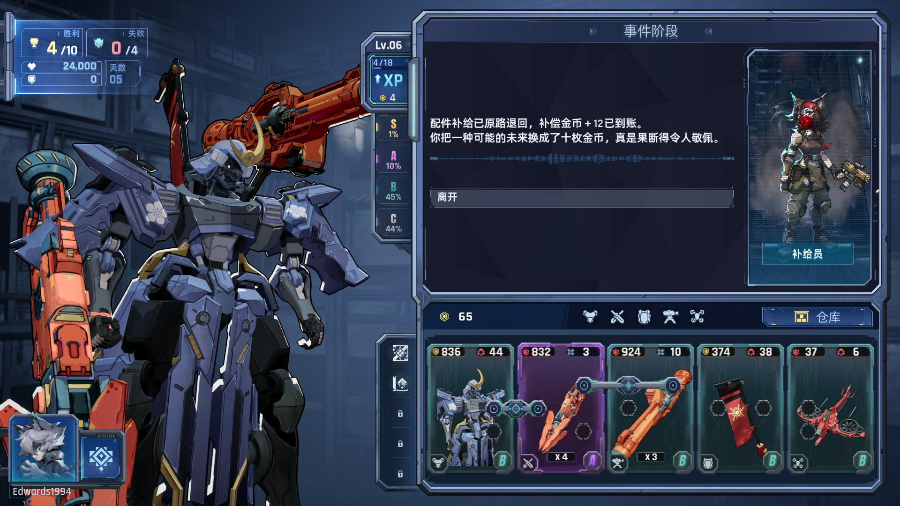
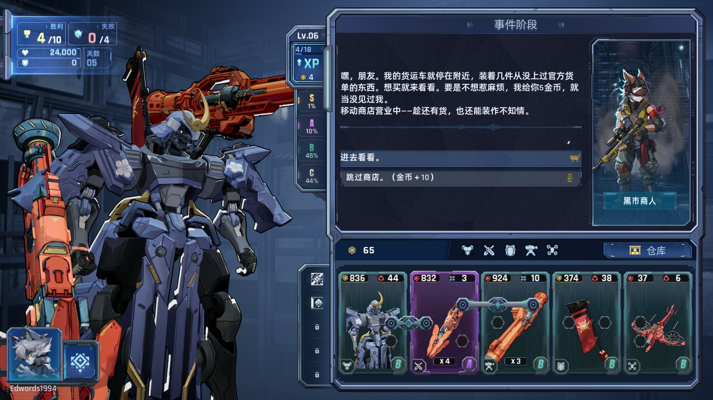
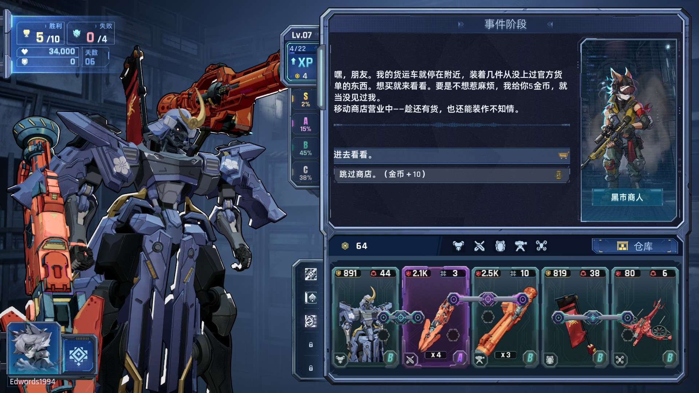

返回复盘奖励金额在叙述与选项间不一致
BUG-010 · 文案金额不一致已确认；商店跳过实付金额待验证。2026-11-16，run05第5/6天，Steam Build26694005，菜单版本待核。
预期依据：同一奖励的叙述、选项及到账提示应采用一致金额。
实际：第5天补给选12金币后，余额53→65，提示“+12已到账”，下一句却写“十枚金币”。同日黑市正文承诺5金币、跳过按钮写+10；第6天再次5与10。补给1次、商店文案2次；未实际跳过商店，不能认定发钱错误。
- 推进至第5天配件补给，选择金币补偿。
- 比较到账提示、叙述和余额。
- 进入第5或6天黑市事件，比较正文与跳过按钮。无需购买。
固定叙述未随奖励调整是可能解释，尚未定位根因。

补给12与十枚金币
第5天商店5与10
第6天再次出现